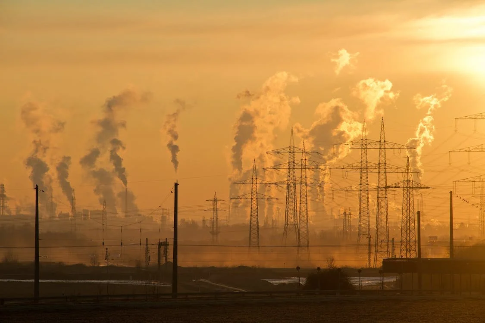

Qyetet me te ndotura ne Europe, pese prej tyre jane nga Ballkani

Sipas Organizatës Botërore të Shëndetësisë (OBSH), në listën e dhjetë qyteteve më të ndotura në Evropë, pesë prej
te cileve janë nga Ballkani, dhe tre ndodhen ne Maqedoni: Shkupi, Tetova dhe Manastiri, te ndjekur nga Tuzla, i cili
ndodhet ne Bosnje dhe Hercegovine dhe Pljevlja ne Mal te Zi. OBSH paralajmëron se kjo shkakton dëme të mëdha
për njerëzit dhe ekonominë. Sipas një studimi nga OBSH në vitin 2016, është llogaritur se në vitin 2010, ndotja e
ajrit ishte shkaktari i më shumë se 37 mijë të vdekurve në Ballkanin Perëndimor, i cili ka 23 milionë njerëz, por që
asnjëherë nuk janë marrë masë për të luftuar ndotjen. Problemi i ndotjes së ajrit ndikon në banorët e kryeqytetit.
Situata në Shkup është “e padurueshme”. Nuk ka pasur kurrë fëmijë kaq shumë të sëmurë që vazhdimisht kolliten.
Nga viti në vit numri i pacientëve kronikë është në rritje.
Per t'u informuar me shume rreth llojeve te ndotjes dhe pasojave te tij, ju ftojme te ndiqni videon me poshte: